![]()
library(here)
library(lattice)
library(raster)
library(scales)
library(data.table)
library(zoo)
library(cimir)
library(sf)
library(RFmerge)
pal <- mblabs::pal
mblabs::theme_labs_on()
load(here("_data/2020-burn_olam_usa_06.RData"))
my.settings <- list(
superpose.polygon=list(col=alpha(pal, .6), border="transparent"),
strip.background=list(col=pal["light"])
)While estimating winter season frost risk for almond orchards over Central California, project partners reported significant discrepancies between modeled-based temperature estimates provided by ERA5-LAND reanalysis dataset and ground observations. These biases impact the calculation of daily Frost-Degree-Day index (FDD) used to price insurance coverage.
Here we want to recalibrate ERA5-LAND hourly temperatures to CIMIS ground network observations in order to address ERA5-LAND model biases reported over Central California. The procedure involves the following steps:
- Build CIMIS time-series across OLAM portfolio extent
- Build DEM covariate (using ERA5-LAND extent and spatial resolution)
- Use RFMerge procedure1 to produce calibrated hourly raster stacks over the past 10 years (we limit this calibration from Jan-01 to Apr-30 every year)
1 See Baez-Villanueva, O. M., Zambrano-Bigiarini, M., Diego, J., Osorio, G.-, & Mcnamara, I. (2020). Tutorial for merging satellite-based precipitation datasets with ground observations using RFmerge.
This work was initially performed for WorldCover PBC and OLAM US in early 2021, and redacted here to omit confidential details.
Covariate Layers
Define zone of interest and load covariate layers.
# Clear workspace, keep portfolio details
load(here("./tmp/2020-burn_olam_usa_04.RData"))
rm(list=setdiff(ls(), c("dir", "pts.dt")))
pts <- SpatialPointsDataFrame(pts.dt[, .(X,Y)], data.frame(pts.dt),
proj4string=CRS("+init=epsg:4326"))
usa <- getData("GADM", country="USA", level=2)
# Limit ZOI to OLAM counties
usa <- usa[usa$NAME_2 %in% pts.dt[, unique(adm2_nm)],]
zoi <- extent(usa)
zoi
# class : Extent
# xmin : -121.4844
# xmax : -117.6166
# ymin : 34.7902
# ymax : 38.07786
# Catalog hourly ERA5 tmean
f <- list.files(
here("../maps/ERA5LAND/2m_temperature/hourly/usa.ca"), ".nc",
recursive=T, full.names=T)
# Verify data archive
n <- sapply(f, function(x) nlayers(brick(x, quick=T)))
unique(n)
# [1] 23 24 1 22
bad <- f[names(n[n<24])]
n <- sapply(f[bad], function(x) nlayers(brick(x, quick=T)))
data.table(
fname = basename(f[bad]),
nlayers = n)
# fname nlayers
# 1: daily_1981-01-01.nc 23
# 2: daily_2020-08-01.nc 1
# 3: daily_2020-10-01.nc 22
# 4: daily_2020-10-02.nc 22
# 5: daily_2020-10-03.nc 22
# 6: daily_2020-10-15.nc 22
N <- lapply(f[1:10], function(x) {
s = brick(x, quick=T)
s = setMinMax(s)
s = minValue(s) == maxValue(s)
which(s)
})
bad <- N[sapply(N, `!=`, integer(0))]We note that 6 days on records do not include 24 hourly series.
Next we obtain long-term weather station records from CIMIS API.
set_key("27ab5faa-abbb-475e-8af1-f380862bca61")
item <- "hly-air-tmp"
# Keep all CIMIS stations inside ZOI
obs.gis <- cimis_station()
setDT(obs.gis)
obs.gis[1:3, .(ConnectDate, DisconnectDate, HmsLatitude, HmsLongitude)]
# ConnectDate DisconnectDate HmsLatitude HmsLongitude
# 1: 6/7/1982 9/25/1988 36º48'52N / 36.814444 -119º43'54W / -119.731670
# 2: 6/7/1982 9/25/1988 36º48'52N / 36.814444 -119º43'54W / -119.731670
# 3: 6/7/1982 9/25/1988 36º48'52N / 36.814444 -119º43'54W / -119.731670
obs.gis[, `:=`(
# HMS Lat/Lon to degree
X = unlist(tstrsplit(HmsLongitude, " / ", fixed=T, keep=2L)),
Y = unlist(tstrsplit(HmsLatitude, " / ", fixed=T, keep=2L))
)][, `:=`(
X = as.numeric(X),
Y = as.numeric(Y)
)][, `:=`(
# Cast dates
date_start = as.Date(ConnectDate, format="%m/%d/%Y"),
date_end = as.Date(DisconnectDate, format="%m/%d/%Y")
)]
obs.gis[1:3, .(HmsLongitude, HmsLatitude, X, Y, date_start, date_end)]
obs.gis <- obs.gis[, .(StationNbr, Name, X, Y, date_start, date_end, IsActive)]
# There are duplicated stations (?)
obs.gis <- unique(obs.gis, by=c("StationNbr", "X", "Y", "date_start"))
anyDuplicated(obs.gis, by="StationNbr")
# Date ranges that are available
obs.gis[, .(range(date_start), range(date_end))]
# V1 V2
# 1: 1982-05-30 1985-07-23
# 2: 2020-10-28 2050-12-31
obs.gis <- SpatialPointsDataFrame(obs.gis[, .(X, Y)], data.frame(obs.gis),
proj4string=CRS("+init=epsg:4326"))
obs.gis <- crop(obs.gis, zoi)
# Plot maps
plot(crop(raster(r, layer=2), zoi), main=basename(f[2]))
plot(pts, add=T, pch="*")
plot(obs.gis, add=T, col=pal[c("red", "green")][1+(obs.gis$IsActive=="True")], pch="x")
obs.lst <- obs.gis@data[, "StationNbr"]
length(obs.lst)
obs.gis <- setDT(obs.gis@data)
# API request limit at 1,750 records, so let's batch it
drange <- c("2017-01-01", "2017-04-30")
obs <- lapply(obs.lst, function(x) {
date_start = obs.gis[StationNbr==x, date_start]
date_end = obs.gis[StationNbr==x, date_end]
date_start = pmax(as.Date(drange[1]), date_start)
date_end = pmin(as.Date(drange[2]), date_end)
res = if(date_end >= date_start) {
s = seq.Date(date_start, date_end, by="10 days")
lapply(s, function(y) {
t = try(cimis_data(
targets=as.integer(x), items=item, measure.unit="M", start.date=y, end.date=y+10-1))
t = if(class(t)[1]=="try-error") NULL else setDT(t)
return(t)
})
} else NULL
return(res)
})
obs <- lapply(obs, rbindlist)
names(obs) <- obs.lst
obs <- rbindlist(obs, fill=T, idcol="StationNbr")
# Clean up resulting dataset
obs[, `:=`(
Name = NULL,
Type = NULL,
Owner = NULL,
Standard = NULL,
ZipCodes = NULL,
Item = NULL,
Qc = NULL,
Unit = NULL
)]
# Verify
obs[StationNbr != Station, .N]
obs[, .N, by=Scope]
obs[, `:=`(
Station = NULL,
Scope = NULL
)]
# Tally ground observations
obs[, .(.N, min(Date), max(Date)), keyby=.(StationNbr)]
# => "232" station missing records 2160/2880
obs[, .(.N, sum(is.na(Value)), min(Date), max(Date)), keyby=.(StationNbr)]
24*(as.Date(drange[2])-as.Date(drange[1])+1)
# Keep stations nearest to OLAM3 site portfolio
ids <- c(168, 206, 145, 188, 148)
fwrite(obs[StationNbr %in% as.character(ids)], here("./out/CIMIA_OLAM3_2017.csv"))Prepare DEM over ERA5 extent.
# Prepare DEM at ERA5 extent and resolution
dem1 <- getData("SRTM", lon=zoi[2], lat=zoi[3])
dem2 <- getData("SRTM", lon=zoi[1], lat=zoi[4])
dem3 <- getData("SRTM", lon=zoi[2], lat=zoi[4])
dem4 <- getData("SRTM", lon=zoi[1], lat=zoi[3])
dem <- merge(dem1, dem2, dem3, dem4, ext=zoi)Convert station time-series to zoo wide arrays.
# Prep station time-series, require ZOO wide format
obs[, Time := paste(as.character(Date), Hour)
][, c("Date", "Time") := IDateTime(
as.POSIXlt(Time, format="%Y-%m-%d %H%M", tz="America/Los_Angeles"))]
View(obs[c(1:30, .N)])
# 2017-01-01 2300 => 2017-01-01 23:00
# 2017-01-01 2400 => 2017-01-02 00:00
# => OK
setorder(obs, StationNbr, Date, Time)
obs.ts <- dcast(obs, Date+Time~StationNbr, value.var="Value")
obs.ts <- zoo(
obs.ts[, .SD, .SDcols=-c(1:2)],
order.by=obs.ts[, as.POSIXlt(paste(Date, Time, tz="America/Los_Angeles"))]
)Recalibrate Hourly Temperature Estimates using Randon Forest
Implement Random Forest merge algorithm.
# Cut the series at Jan-Apr 2017 (time constraint)
drange <- c("2017-01-01", "2017-04-30")
x1 <- which(f %like% drange[1])
x2 <- which(f %like% drange[2])
f <- f[x1:x2]
f[1]
# Limit ERA5 covariate
era <- brick(as.list(f))
era <- crop(era, zoi, filename=here("./out/ERA5_2m_temperature_2017.grd"), overwrite=T)
era <- brick(here("./out/ERA5_2m_temperature_2017.grd"))
# Align DEM to ERA5
dem <- resample(dem, era[[1]], filename=here("./out/SRTM_ERA5.grd"))
identical(res(dem), res(era))
identical(extent(dem), extent(era))
identical(nlayers(era), nrow(obs.ts))
# ZOI requires `sf`
stations <- sf::st_as_sf(obs.gis, coords=c("X", "Y"), crs=4326)
zoi <- st_as_sfc(st_bbox(usa))
zoi <- st_sf(data.frame(ID=1), geom=zoi)
# Verify CRS
identical(st_crs(zoi), st_crs(era))
identical(st_crs(r), st_crs(era))
# Reproject all to NAD_1983_California_Teale_Albers
NAD83 <- CRS("+init=epsg:3310")
era <- projectRaster(from=era, crs=NAD83)
dem <- projectRaster(from=dem, crs=NAD83)
stations <- st_transform(stations, crs=3310)
pts <- spTransform(pts, CRS("+init=epsg:3310"))
zoi <- st_transform(zoi, crs=3310)
obs.gis[, `:=`(
Lon = st_coordinates(stations)[, "X"],
Lat = st_coordinates(stations)[, "Y"]
)]
# Covariates
covariates <- list(era=era, dem=dem)
obs.meta <- obs.gis[StationNbr %in% names(obs.ts), .(StationNbr, Lon, Lat)]
# RFmerge
dir.create(here("./out/2017_RFmerge_proj"))
mc.cores <- parallel::detectCores()-2
rfmep <- RFmerge(
x = obs.ts,
metadata = obs.meta,
cov = covariates,
id="StationNbr", lat="Lat", lon="Lon", ED=TRUE,
mask=zoi, training=0.9, write2disk=TRUE, drty.out=here("./out/2017_RFmerge_proj"),
parallel="parallel", par.nnodes=mc.cores)
names(rfmep)[c(1:2, nlayers(rfmep))]
# [1] "X2017.01.01.01.00.00" "X2017.01.01.02.00.00" "X2017.05.01.00.00.00"
crs(rfmep)Extract recalibrated time-series across almond production sites.
# Extract recalibrated time-series across production sites
removeTmpFiles(h=0)
dt.imp <- extract(rfmep, pts)
dt.imp = as.data.table(dt.imp, keep.rownames=TRUE)
dt.imp[, loc_id := pts$loc_id]
dt.imp = melt(dt.imp, id.vars="loc_id", variable.name="time", value.name="value", variable.factor=F)
dt.imp[, time := as.POSIXct(time, format="X%Y.%m.%d.%H.%M.%OS", tz="America/Los_Angeles")]
dt.imp[, range(time)]
dt.imp[, `:=`(
# Convert to IDate
date = as.IDate(time),
time = as.ITime(time)
)]
# Re-extract ERA5-LAND over period to double-check
r <- brick(f[1], quick=T)
pts <- spTransform(pts, crs(r))
dt.era <- lapply(f, function(x) {
r = brick(x, quick=T)
y = extract(r, pts)
y = as.data.table(y, keep.rownames=TRUE)
y[, loc_id := pts$loc_id]
y = melt(y, id.vars="loc_id", variable.name="time", value.name="value", variable.factor=F)
y[, time := as.POSIXct(time, format="X%Y.%m.%d.%H.%M.%OS", tz="UTC")]
})
dt.era <- rbindlist(dt.era)
dt.era[, range(time)]
dt.era[, `:=`(
# Convert to IDate
date = as.IDate(time),
time = as.ITime(time)
)]
# Impute ERA5 hourly time-series with output of RFmerge
dt <- readRDS(here("./tmp/2020-tmean-hourly_olam_ca_almd.rds"))
dt.imp[dt, on=.(loc_id, date, time), era := i.value
][dt.era, on=.(loc_id, date, time), era_valid := i.value]
# Save
dt <- dt[!dt.imp, on=.(loc_id, date, time)]
dt <- rbind(dt, dt.imp[, .SD, .SDcols=names(dt)])
setorder(dt, loc_id, date, time)
saveRDS(dt, here("./tmp/2020-tmean-hourly_olam_ca_almd_imputed.rds"))rm(x, i, j, t, tmp, dem1, dem2, dem3, dem4, n, x1, x2, dt, dtc)
save.image(here("./tmp/2020-burn_olam_usa_06.RData"))Explore Results
Validate ZOI, DEM, and ERA5 covariates.
# Plot with package `terra` (instead of deprecated `raster`)
library(terra)
era <- rast(here("./_out/ERA5_2m_temperature_2017.grd"))
# Align projections
pts <- vect(pts)
stations <- vect(stations)
zoi <- vect(zoi)
pts <- project(pts, "epsg:4326")
stations <- project(stations, "epsg:4326")
zoi <- project(zoi, "epsg:4326")
era <- project(era[[1]], "epsg:4326")
dem <- project(rast(dem), "epsg:4326")
rfmep <- project(rast(rfmep[[1]]), "epsg:4326")
# Validate ERA5 and DEM covariates
plot(era, ext=zoi, ylab=names(era), col=terrain.colors(20),
main="ERA5-LAND Temperature (°C) on 2017-01-01 01:00")
grid()
plot(stations, add=T, pch="x", col=pal[["dark"]])
plot(pts, add=T, pch="o", col=pal["blue"])
plot(pts[pts$loc_id %in% c(25, 82, 83), ], add=T, col=pal["red"], pch="o")
legend("bottom", ncol=3, bty="n",
legend=c("CIMIS WS", "OLAM site", "Portfolio site"),
col=pal[c("dark", "blue", "red")], pch=c("x", "o", "o"))
plot(dem, ext=zoi, ylab=names(dem), col=terrain.colors(20),
main="SRTM 90m (meter)")
grid()
plot(pts, add=T, pch="o", col=pal["dark"])
plot(stations, add=T, col=pal[c("dark", "red")][1+(obs.gis$IsActive=="True")], pch="x")
legend("bottom", ncol=3, bty="n",
legend=c("Active station", "Stale station", "Production site"),
col=pal[c("dark", "red", "dark")], pch=c("x", "x", "o"))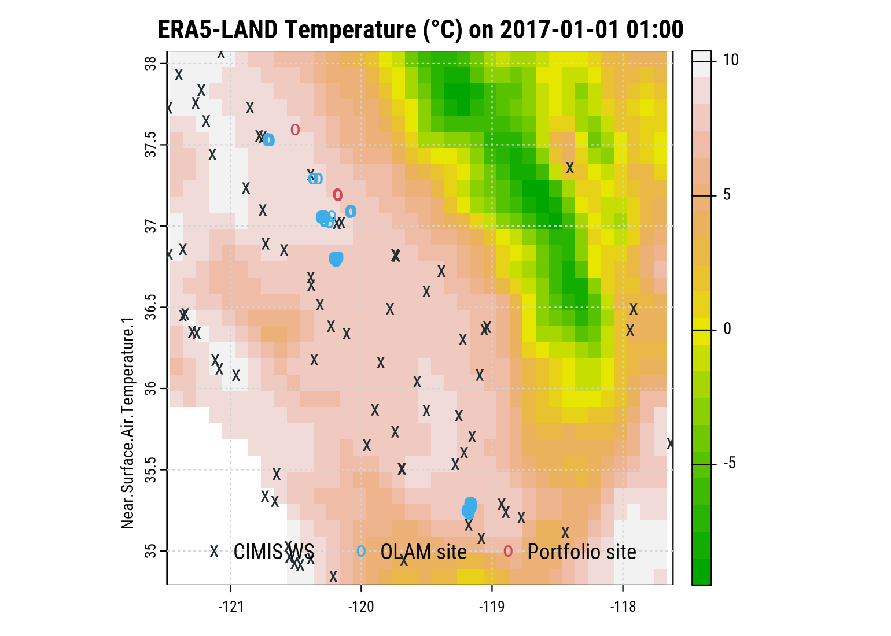
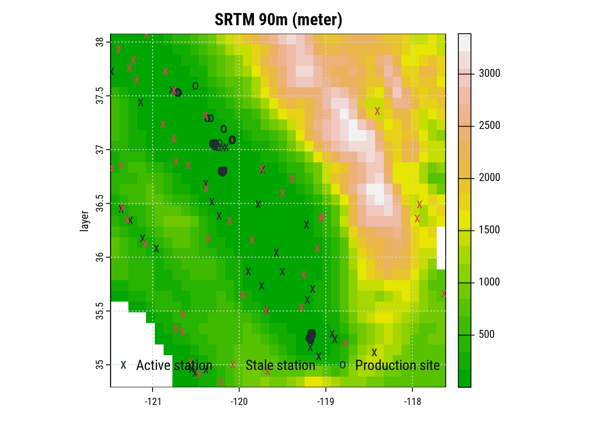
CIMIS station observations between Jan-Apr 2017.
obs[, .(
`Obs.` = comma(.N),
`NA` = percent(sum(is.na(Value))/.N),
`Min.` = min(Value, na.rm=T),
`Max.` = max(Value, na.rm=T),
`Date Range` = paste(range(Date, na.rm=T), collapse=" - ")
), keyby=.(StationNbr)] %>%
rmarkdown::paged_table()CIMIS Station Observations, Jan-Apr 2017
plot(obs.ts[,1], col=alpha(pal[1], .7),
sub=paste("Station", names(obs.ts)[1]), xlab="CIMIS Hourly Temp. °C", ylab=NA)
grid()
plot(obs.ts[,20], col=alpha(pal[1], .7),
sub=paste("Station", names(obs.ts)[20]), xlab="CIMIS Hourly Temp. °C", ylab=NA)
grid()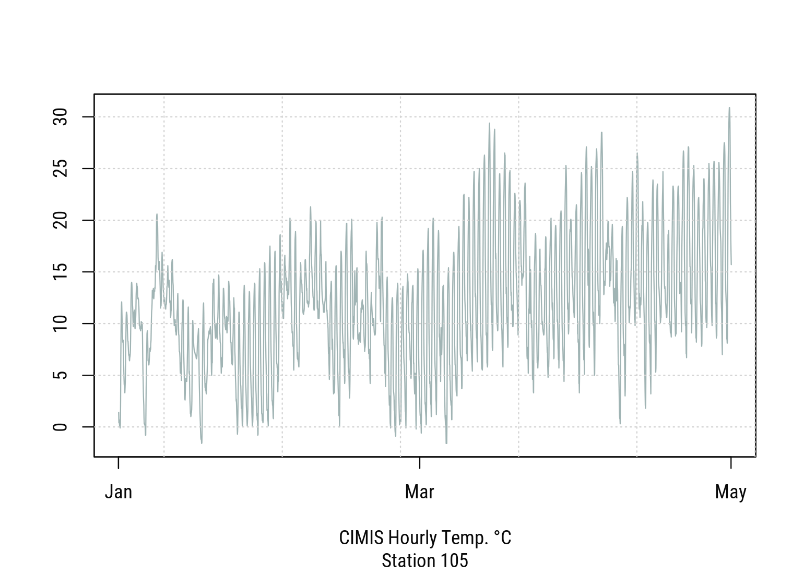
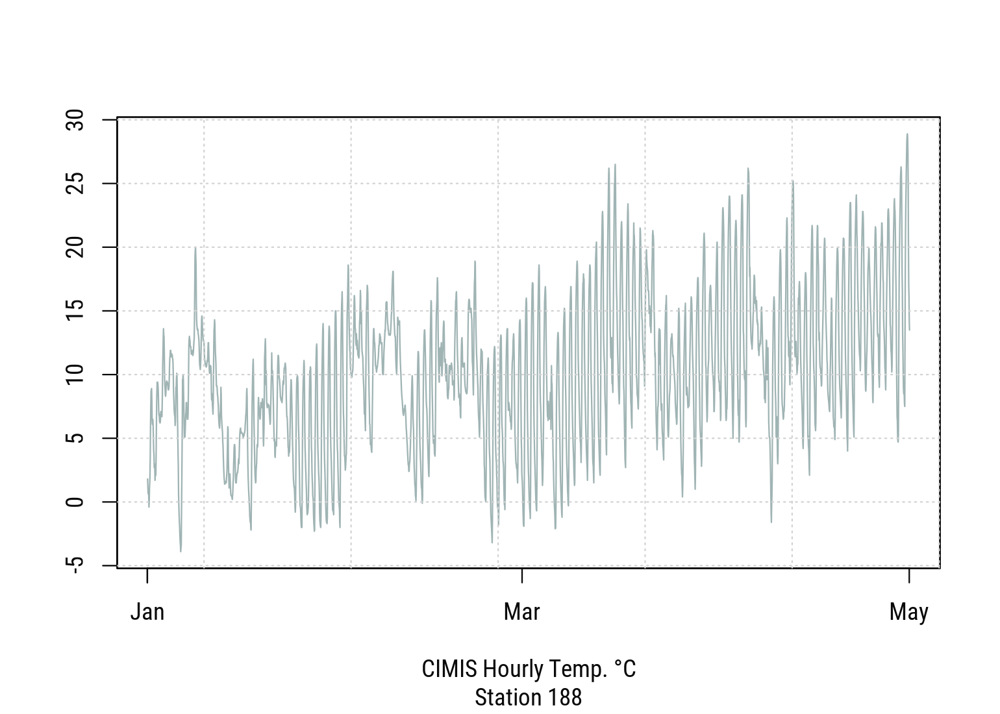
histogram(~Value|StationNbr, data=obs, breaks=20,
col=alpha(pal[1], .6), border=pal["light"], layout=c(2,6),
par.settings=my.settings,
xlab="Jan-Apr 2017 - CIMIS Hourly Temp. °C across meteo stations")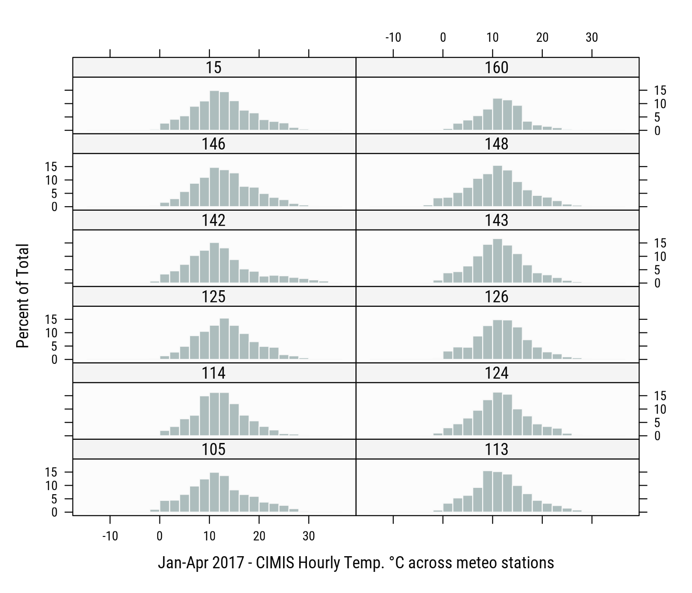
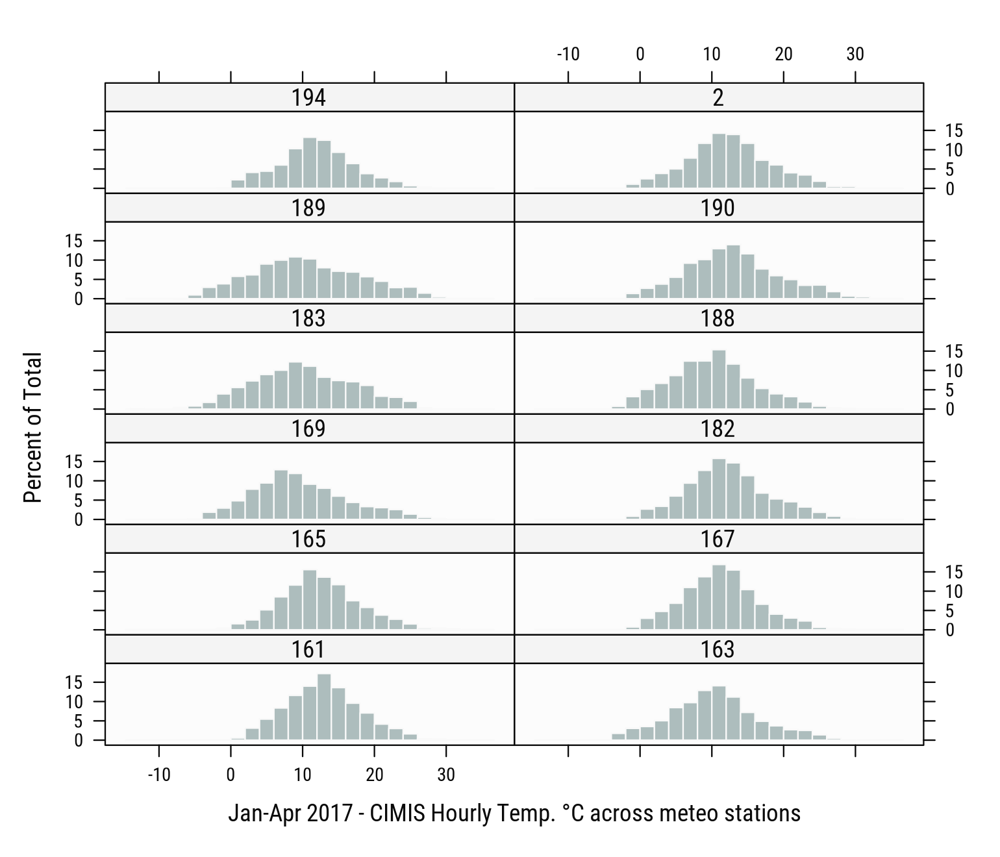
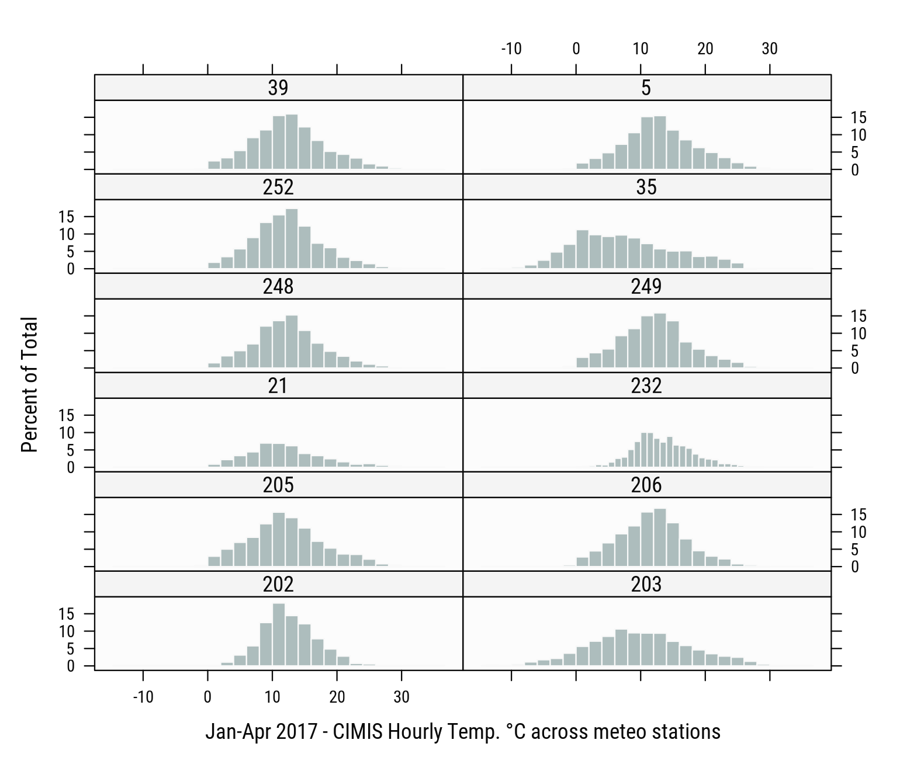
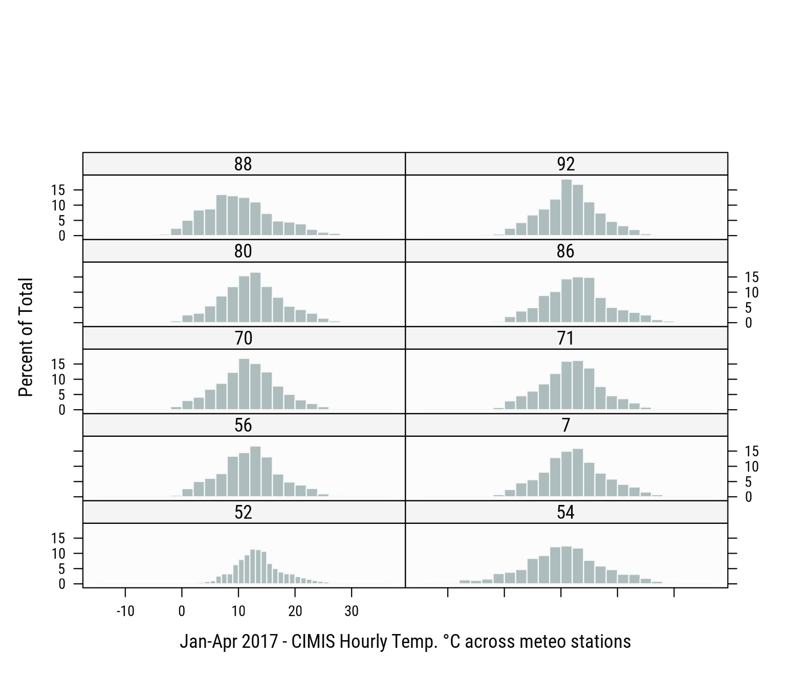
plot(rfmep, ext=zoi, ylab=names(rfmep)[1],
col=terrain.colors(80), breaks=-8:11,
main="RF-MEP Temperatures °C")
grid()
plot(pts, pch="o", col=pal["dark"], add=T)
plot(stations[stations$StationNbr %in% names(obs.ts),],
pch="x", col=pal[["dark"]], add=T)
legend("bottom", ncol=2, bty="n",
legend=c("Active station", "Production site"), pch=c("x", "o"))
plot(era, ext=zoi, ylab=names(era)[1],
col=terrain.colors(80), breaks=-8:11,
main="ERA5-LAND Temperatures °C")
grid()
plot(pts, pch="o", col=pal["dark"], add=T)
plot(stations[stations$StationNbr %in% names(obs.ts),],
pch="x", col=pal[["dark"]], add=T)
legend("bottom", ncol=2, bty="n",
legend=c("Active station", "Production site"), pch=c("x", "o"))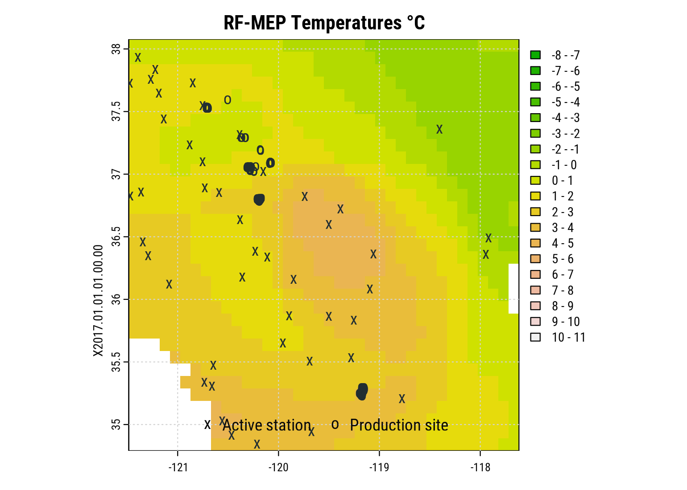
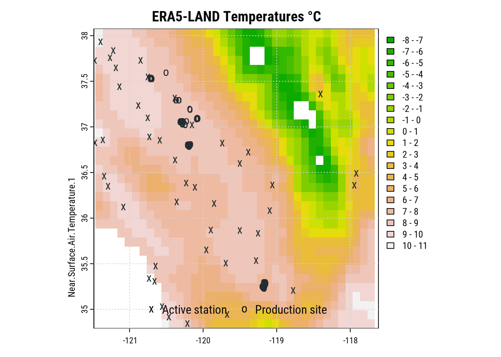
Hourly time-series from nearest CIMIS ground stations compared to hourly time-series at production sites from ERA5-LAND.
wireframe(Value~as.numeric(Date)*Time, data=obs,
xlab="Date", ylab="Hour", sub="Nearest CIMIS Stations - Hourly Temp. °C",
col=NA, col.regions=terrain.colors(100, alpha=.4), drape=T,
at=do.breaks(c(-5,35), 100)
)
wireframe(era~as.numeric(date)*time, data=dt.imp,
xlab="Date", ylab="Hour", zlab="°C",
sub="Production Sites - Hourly Temp. °C (ERA5-LAND)",
col=NA, col.regions=terrain.colors(100, alpha=.4), drape=T,
at=do.breaks(c(-5,30), 100)
)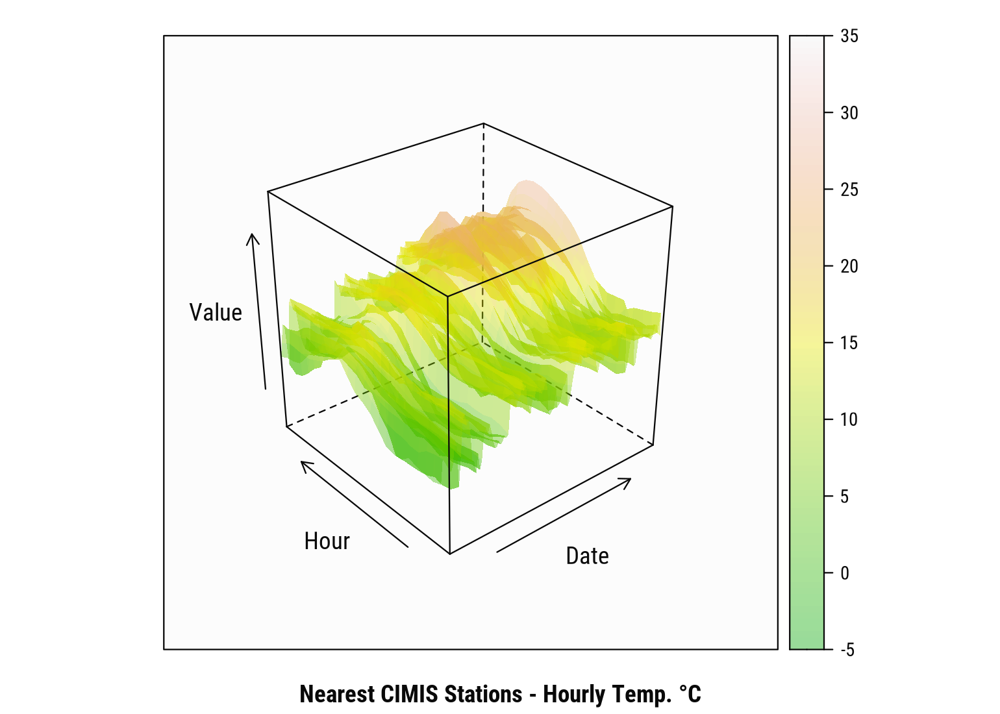
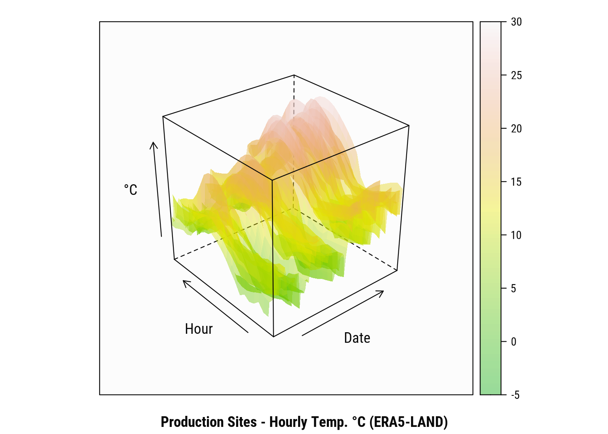
Mean recalibration effect across production sites (after RFmerge procedure):
wireframe((value-era)~as.numeric(date)*time, data=dt.imp,
xlab="Date", ylab="Hour", zlab="°C",
sub="ERA5-LAND Mean Recalibration Effect\nacross Production Sites\nHourly Temp. °C",
col=NA, col.regions=terrain.colors(100, alpha=.4), drape=T
)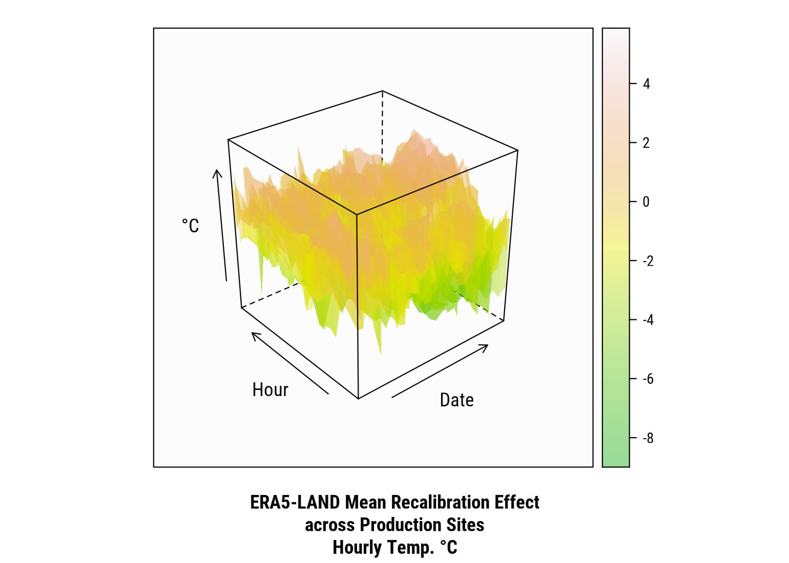
FDD index across sites between Feb-01 and Mar-31, 2017 (before and after ground calibration):
dt.imp[date %between% c("2017-02-01", "2017-03-31"), .(
era = min(era, na.rm=T),
era_valid = min(era_valid, na.rm=T),
value = min(value, na.rm=T)
), by=.(loc_id, date)][, .(
`FDD (before)` = sum(fifelse(era<0, pmax(era, -4, na.rm=T), 0), na.rm=T),
`FDD (validate)` = sum(fifelse(era_valid<0, pmax(era_valid, -4, na.rm=T), 0), na.rm=T),
`FDD (after)` = sum(fifelse(value<0, pmax(value, -4, na.rm=T), 0), na.rm=T)
), keyby=.(loc_id)]%>%
rmarkdown::paged_table()FDD across sites between Feb-01 and Mar-31, 2017
Citation
BibTeX citation:
@online{bacou2021,
author = {BACOU, Melanie},
title = {Merge {Ground} and {Satellite} {Observations} with {RFMerge}},
date = {2021-01-16},
url = {https://mbacou.com/posts/2021-01-16-rfmerge/},
langid = {en}
}
For attribution, please cite this work as:
BACOU, Melanie. 2021. “Merge Ground and Satellite Observations
with RFMerge.” January 16, 2021. https://mbacou.com/posts/2021-01-16-rfmerge/.